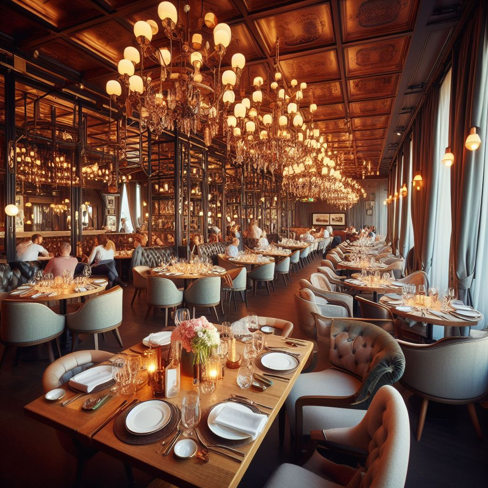
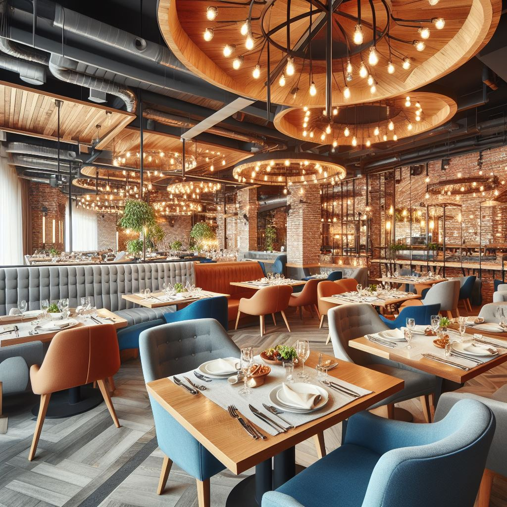

BIENVENIDO A FOS RESTAURANTE
¿Quienes somos?
Hola, somos un restaurante de carnes que le ofrece una variedad de platos deliciosos y de calidad. Nuestra especialidad es el pastel de choclo chileno, un plato típico de la cocina chilena, que se elabora con una capa de carne picada de vacuno y pollo, cocinada con cebolla, pasas, aceitunas y huevo duro, y cubierta con una masa de maíz dulce y albahaca. Se hornea hasta que quede dorado y se sirve caliente. Es un plato que combina el sabor salado de la carne con el dulzor del maíz, y que le hará sentir como en casa. Le invitamos a probarlo y a disfrutar de nuestra atención y ambiente.
¿Qué ofrecemos?
Una variedad de platos deliciosos y de calidad, capaces de satisfacer los paladares y apetitos mas exigentes. Desde el tradicional magro de cerdo con tomate, hasta el exótico currywurst casero, pasando por el típico pastel de choclo chileno y el elegante saltimbocca de ternera. Todos nuestros platos se elaboran con ingredientes frescos, de primera calidad, y se cocinan al punto de su preferencia.
Nuestros precios
Le ofrecemos precios razonables y competitivos, planes que se ajustan a sus necesidades, ofertas especiales y descuentos para grupos. Disfrute de nuestra comida sin gastar demasiado. Aceptamos diferentes formas de pago; efectivo, tarjeta o transferencia electronica. Te damos la opción de reservar tu mesa o pedir tu comida para llevar.
Nuestros espacios
Brindamos un servicio excelente y un ambiente acogedor. Nuestro amable, profesional y atento personal te hará sentir como en casa. Contamos con espacios amplios, cómodos y limpios. Decorados de forma agradable y personalizable para su evento. Además, la irresistible carta ofrece variedad de bebidas y la mejor selección de postres, para que pueda completar su experiencia gastronómica.
 